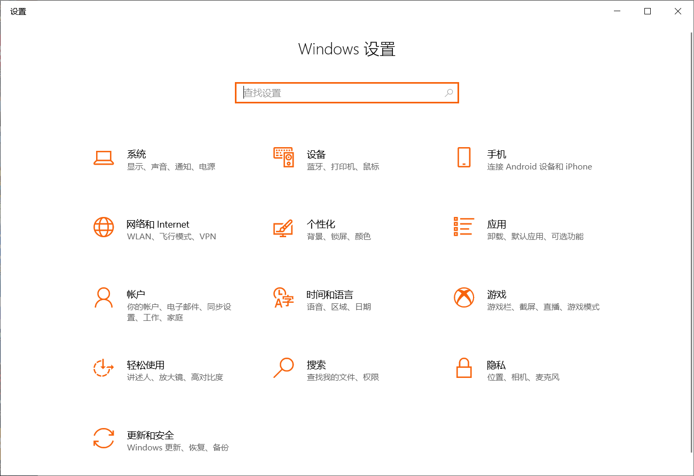
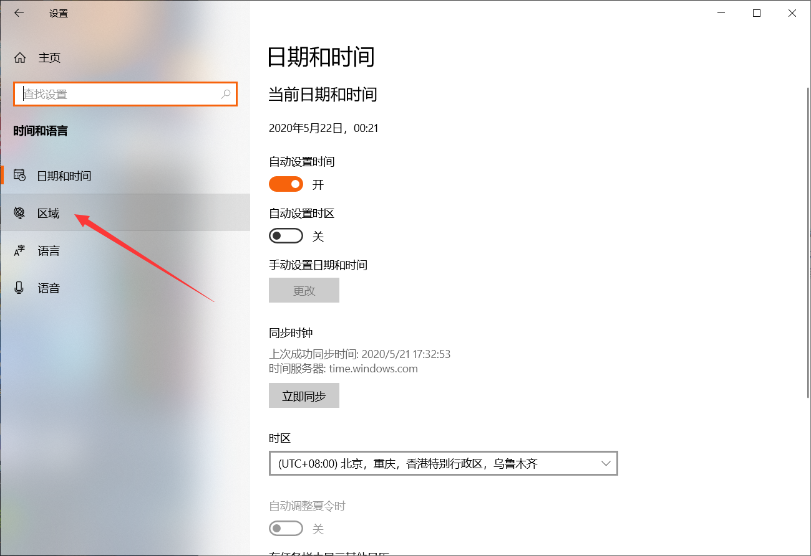
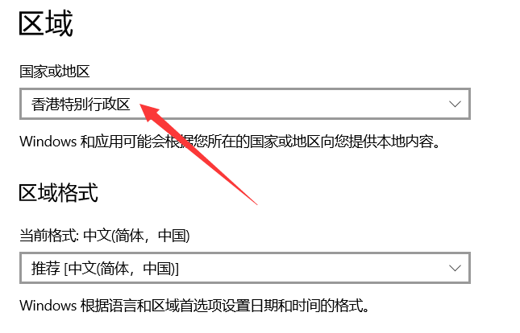
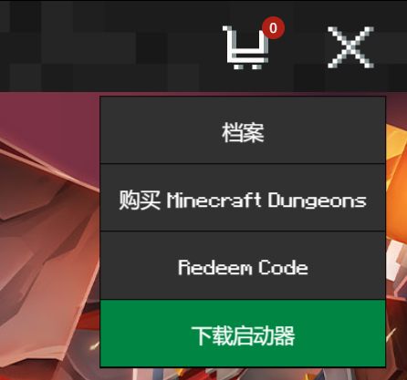
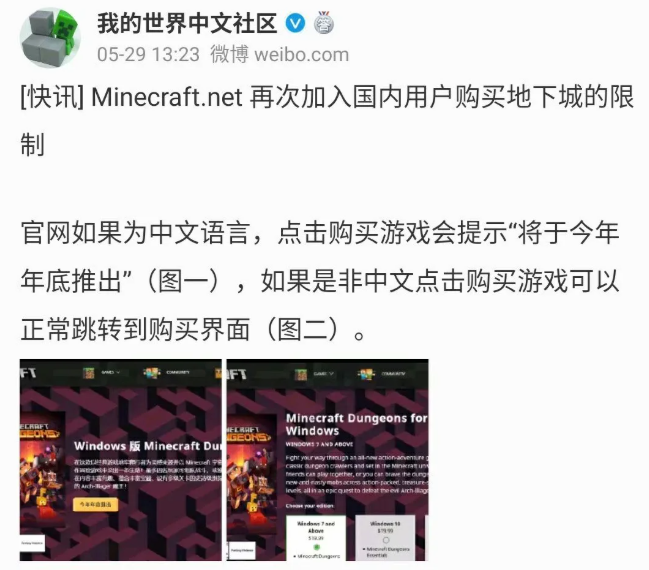

说明
愚人节那天得知消息，Minecraft Dungeons 这个游戏将由网易负责在国内发行，而网易或许没法和微软 Xbox 商店以及 PC 版本同步发售这款游戏，为了能抢先体验到，也为了避开网易，这里需要教一下如何给 PC 换区购买这游戏。毕竟国内 IP 访问商店是看不到 Minecraft Dungeons 的。
注意换到港区就行了。
PC换区教程
首先右键开始菜单，选择设置。

点击“时间和语言”，然后点击“区域”。

然后到“国家或地区”这里切换地区就行了，下面的“区域格式”不用管。

这样就成功切换到港区了。
接下来去 Minecraft Dungeons 官网下载启动器安装。然后等待发售吧。

汉化相关
当然这篇文章不会到这里就结束，网易还扒去了中文独占，所以游戏内并没有内置中文。
但是在 MCbbs 上有人弄了个中文包，也算是个民间汉化吧。
地址：https://www.mcbbs.net/thread-1018057-1-1.html。
Github 地址：https://github.com/zyjking/unoffical-mcd-translate/releases。
因为还没玩上这个游戏，所以我并不知道这个汉化包是否能用，至少这个帖子的评论区有人能用就是了。
6月16日更新
剩下这点可能是专门写给 Sv 看的吧。
这个游戏综合体验下来，感觉其实不值 144RMB，一想起后续 Dlc 还得另外掏钱买，不如干脆就算了，看后续各位有没有每人来一份一起联机的想法了。
5月29日得知消息，Minecraft Dungeons 的官网购买页面如果显示的是中文，那么将无法进入付款页面，只会显示将于年底推出。
